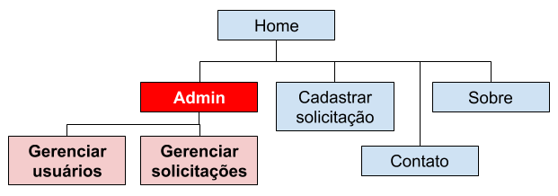
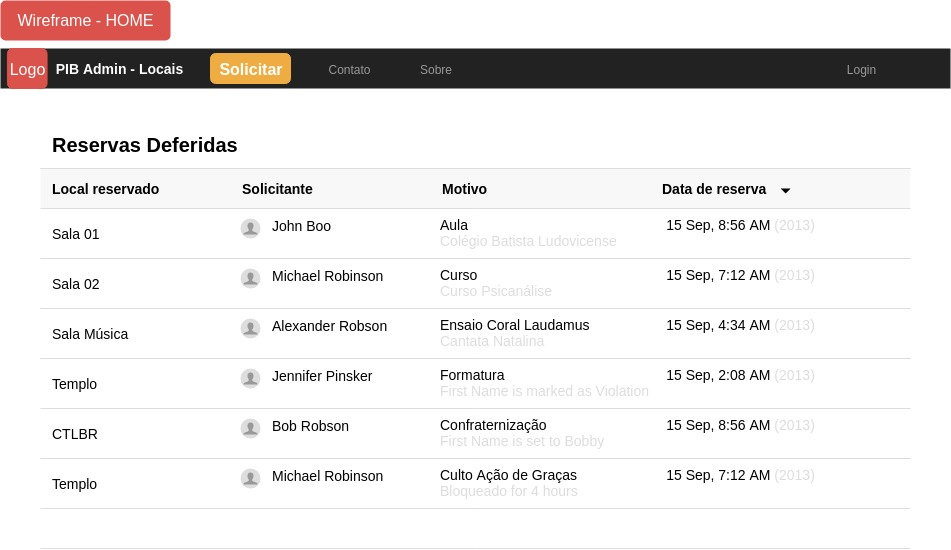
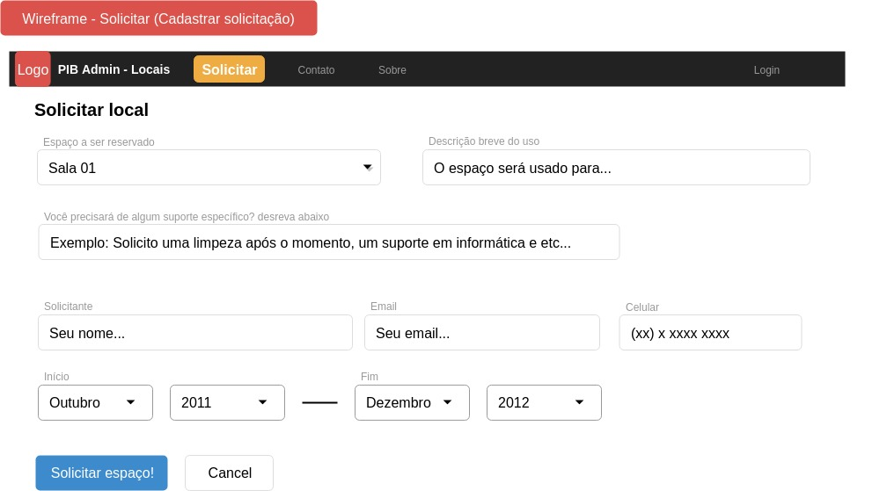
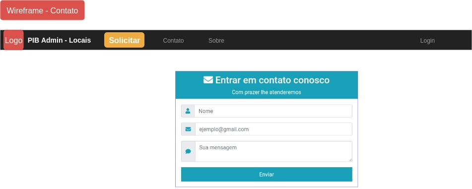
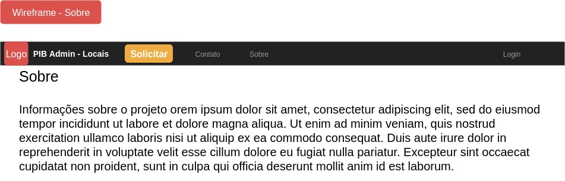

Desenvolvimento de Sistemas WEB - 2018.2
Aluno: Samir José Lopes Souza - 2012019134Avaliação 01
Briefing
10/12
Primeira Igreja Batista de São Luís - Administração
Administração/Religiosa
Sistema para reserva de locais (salas, espaços) durante um período de tempo. Estes locais podem ter pessoas relacionadas a eles por motivos diversos (responsáveis por limpeza e/ou organização do local, usuários recorrentes daquele espaço) e elas precisam ser notificadas sobre esses acontecimentos.
Ontem
Gerenciamento dos locais que podem ser reservados Gerenciamento das pessoas responsáveis de diversas formas pelos locais e/ou requisitantes dos locais Notificações para os interessados quanto ao início e fim dos acontecimentos naquele local Calendário exibindo as programações futuras e os seus respectivos locais ou exibindo os locais que estarão em uso e o acontecimento que ocorrerá
Sim, cores bem definidas na instituição
- vermelho
- branco
- logomarca
Aqueles que costumam requisitar os espaços para o uso Aqueles envolvidos com a manutenção de forma em geral desses espaços. Faixas etárias envolvidas: desde adolescentes até idosos
Próximo
Não existe nenhuma versão do sistema produzida anteriormente
Área Pública Área Administrativa Um Google calendar especializado para reserva de locais
Site altamente responsivo
Produção Geral: 1 semana
- 1 dia levantamento de requisitos
- 3 dias de desenvolvimento e testes iniciais
- 3 dias de desenvolvimento e testes finais
Sitemap

Wireframe
Home 
Solicitar 
Contatos 
Sobre o sistema e seus desenvolvedores 
Gerenciamento das solicitações
Gerenciamento dos usuários
Fim da parte 1 :(